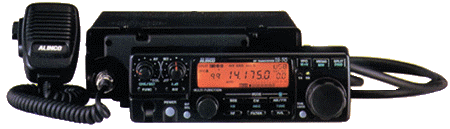

Alinco DX-70T HF/6m Tranceiver
- Transmits and receives from 150 kHz - 30 MHz (HF, has MARS mod)
and from 50 MHz - 54 MHz (6 meters)
- works on modes CW, USB, LSB, AM, FM
- output power (HF): 5, 10, 50, 100 W on CW, USB, LSB, FM; 4, 40 W AM
- output power (6m): 1, 10 W on CW, USB, LSB, FM; 0.4, 4 W on AM
Currently idle, designed for mobile use. Maybe i'll put it in the car
if i get an appropriate antenna and autotuner. Separate antenna ports
for HF and 6 meters. Includes CTCSS tone encoder for repeater work.
100 memories, 2 VFOs. Detachable faceplate.
Service Manual 8 MB pdf
Extended Receive Mod pdf
Packet Interfacing pdf
External Amp Relay Mod pdf
Adjustment Points 362 KB pdf
Tone Encoder Programming Chart pdf